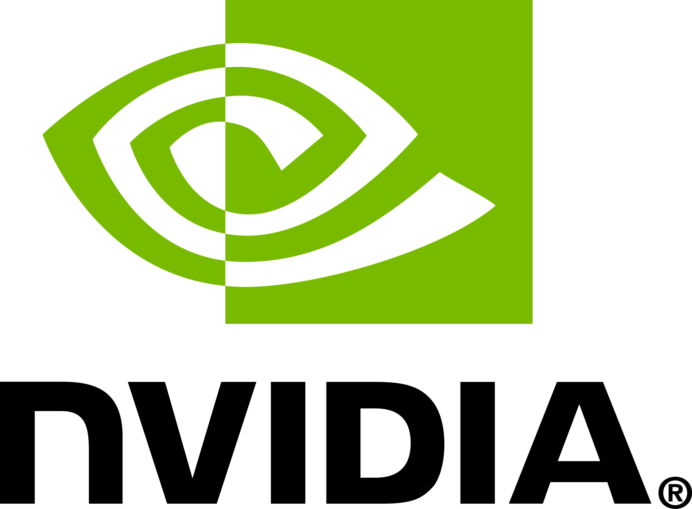

Tools & technology
Help founders experiment with platforms, product credits and technical resources.
PARTNERSHIPS
Bring your tools, expertise or network to a global community exploring AI-powered venture creation.
WAYS TO GET INVOLVED
Help founders experiment with platforms, product credits and technical resources.
Share practical experience through sessions and guidance for ventures.
Connect the community to collaborators, investors and the wider entrepreneurial ecosystem.
THE LAB’S PARTNER COMMUNITY



START A CONVERSATION
Tell the Lab about your organisation and how you would like to contribute. The team can discuss the right fit for the community.
aiventurelab@insead.edu